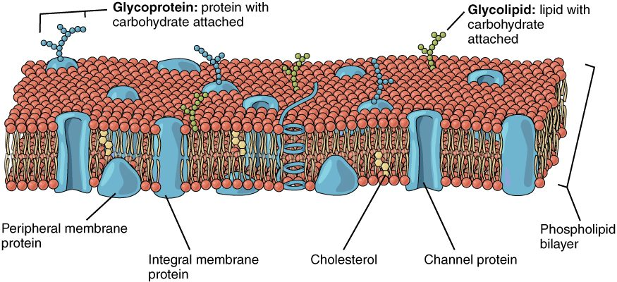

The cell and its plasma membrane
1Why this matters
The lab calls about Ms. Reyes, 58: her blood potassium reads 6.9 mmol/L, dangerously high. But she feels fine, the sample sat on a counter for three hours, and the plasma in the tube looks pink. A fresh sample reads 4.2, which is normal. Inside every red blood cell, potassium is about 25 times more concentrated than in plasma. When cells in the first tube burst, that potassium spilled out. A membrane less than 10 nanometers thick is all that normally keeps it in.
2What this builds on
3Quick check before you start
1. A phospholipid is amphipathic. What does that mean?
- It has a water-attracting end and a water-avoiding end
- It dissolves equally well in water and in oil
- It carries a positive charge at both ends
Show the answer
Amphipathic (amphi- = both) means one molecule has both a hydrophilic part (the phosphate head) and a hydrophobic part (the fatty acid tails). That split is what makes phospholipids form a bilayer in water.
- Correct: It has a water-attracting end and a water-avoiding end:
- It dissolves equally well in water and in oil:
- It carries a positive charge at both ends:
2. A semipermeable membrane separates two solutions. What does it do?
- Blocks every substance equally
- Lets some substances through and blocks others
- Lets every substance through at the same rate
Show the answer
A semipermeable membrane lets some substances cross (often water) and holds others back. The plasma membrane is a living version of this idea.
- Blocks every substance equally:
- Correct: Lets some substances through and blocks others:
- Lets every substance through at the same rate:
3. Which of these is an ion?
- An oxygen molecule, O2
- A glucose molecule
- A potassium atom that has lost one electron, K+
Show the answer
An ion is an atom or molecule with a net charge because it has gained or lost electrons. K+ has lost one electron. O2 and glucose carry no net charge.
- An oxygen molecule, O2:
- A glucose molecule:
- Correct: A potassium atom that has lost one electron, K+:
4Anatomy

5How it works, step by step
- Phospholipids have a hydrophilic head and two hydrophobic tails, and your cells sit in water.The phospholipids arrange themselves into two sheets, tail to tail: the phospholipid bilayer.
- The bilayer has an oily, hydrophobic core.Small nonpolar molecules such as oxygen cross it, but ions and large polar molecules such as glucose are almost blocked.
- Ions and glucose are almost blocked by the bilayer.They cross only through specific membrane proteins, so the membrane is selectively permeable.
- Selective permeability keeps ions from evening out, and membrane proteins keep moving sodium out and potassium in.The intracellular fluid stays high in potassium and the extracellular fluid stays high in sodium.
- Each of those ion differences is a stored electrochemical gradient.Cells can release that stored push later to do work, such as moving other substances or sending electrical signals.
6Core concepts
7A common mistake
The wrong idea: The plasma membrane is a rigid wall, like a shell, with everything fixed in place.
What actually happens: The plasma membrane is fluid. Its phospholipids drift sideways within their own sheet constantly, and many of its proteins drift too. It behaves more like a thin film of oil than a solid wall. That fluidity is why a small tear can reseal, and why the membrane can bend as a red blood cell squeezes through a capillary narrower than itself. The rigid cell wall you may remember from biology belongs to plants and bacteria, not to human cells.
8Check yourself
Anything you miss goes into your review queue.
1. A researcher makes an artificial membrane that is a pure phospholipid bilayer, with no proteins. Which substance crosses it most easily?
- Sodium ions
- Glucose
- Oxygen
- Potassium ions
Show the answer
Oxygen is small and nonpolar, so it dissolves in the bilayer's hydrophobic core and crosses without any protein.
- Sodium ions: Sodium ions carry a charge and hold a shell of water molecules around them. Moving them into the oily core costs a great deal of energy, so the bare bilayer almost blocks them.
- Glucose: Glucose is large and polar. It barely crosses a bare bilayer; cells take it in through specific transport proteins.
- Correct: Oxygen: Correct. Oxygen is small and nonpolar, so it passes through the oily core on its own.
- Potassium ions: Potassium ions are charged, like sodium ions, so the hydrophobic core almost blocks them.
2. A blood sample from Mr. Tan sat for four hours before testing and was shaken hard. The lab reports plasma potassium of 6.8 mmol/L (normal 3.5 to 5.0), and the plasma looks pink. A fresh sample reads 4.1. What best explains the first result?
- His kidneys stopped removing potassium between the two draws
- Burst red blood cells spilled their potassium into the plasma in the tube
- Potassium moved out of the plasma and into the red blood cells
- Platelets released sodium, which the machine read as potassium
Show the answer
Red blood cells hold about 25 times more potassium than plasma does. When their membranes tear, that potassium pours into the plasma in the tube, so the lab measures a falsely high value. The pink color is from the contents of the burst cells.
- His kidneys stopped removing potassium between the two draws: The fresh sample was normal, so his kidneys are handling potassium fine. The problem was in the tube, not in him.
- Correct: Burst red blood cells spilled their potassium into the plasma in the tube: Correct. Burst red cells released their potassium-rich cytoplasm into the plasma in the tube.
- Potassium moved out of the plasma and into the red blood cells: Potassium moving into cells would lower plasma potassium, not raise it.
- Platelets released sodium, which the machine read as potassium: Platelets do not release sodium in amounts that could do this, and lab machines measure sodium and potassium separately.
3. Put these layers in order, starting in the interstitial fluid and moving into the cell.
- Interstitial fluid
- Glycocalyx
- Phosphate heads of the outer sheet
- Fatty acid tails
- Phosphate heads of the inner sheet
- Cytoplasm
Show the answer
From outside in: the interstitial fluid bathes the cell; the glycocalyx is the sugar coat on the outer face; then come the hydrophilic heads of the outer sheet, the hydrophobic tails of both sheets meeting in the middle, the heads of the inner sheet, and finally the cytoplasm.
- Correct order: 1. Interstitial fluid 2. Glycocalyx 3. Phosphate heads of the outer sheet 4. Fatty acid tails 5. Phosphate heads of the inner sheet 6. Cytoplasm
4. A fluid sample contains sodium at 142 mmol/L and potassium at 4.2 mmol/L. Which fluid could it be?
- Cytoplasm from a red blood cell
- Interstitial fluid
- Fluid from inside a white blood cell
- Intracellular fluid from any cell
Show the answer
High sodium and low potassium is the pattern of extracellular fluid. Interstitial fluid is extracellular fluid.
- Cytoplasm from a red blood cell: Red cell cytoplasm is intracellular fluid. It is high in potassium and low in sodium, the reverse of this sample.
- Correct: Interstitial fluid: Correct. High sodium with low potassium marks extracellular fluid, and interstitial fluid is part of it.
- Fluid from inside a white blood cell: Fluid inside a white blood cell is intracellular fluid, which has high potassium and low sodium.
- Intracellular fluid from any cell: Intracellular fluid in general has about 140 mmol/L potassium and only 10 to 15 mmol/L sodium.
5. A classmate says, "Once a phospholipid is in the plasma membrane, it stays in exactly that spot." Which observation shows this is wrong?
- Phospholipids rarely flip from one sheet to the other
- The glycocalyx is found only on the outer face
- Integral proteins come out only when the bilayer is broken
- Phospholipids keep drifting sideways, trading places within their sheet
Show the answer
The membrane is fluid: each phospholipid moves sideways and swaps places with its neighbors millions of times a second. That is the "fluid" in the fluid mosaic model.
- Phospholipids rarely flip from one sheet to the other: This is true, but it supports the classmate's idea, since it describes a movement that almost never happens. It does not show that phospholipids move.
- The glycocalyx is found only on the outer face: This is true, but it is about where sugars are, not about whether phospholipids move.
- Integral proteins come out only when the bilayer is broken: This is true, but it describes how firmly proteins are anchored in the bilayer, not whether lipids move.
- Correct: Phospholipids keep drifting sideways, trading places within their sheet: Correct. Sideways drift within a sheet shows that phospholipids do not stay in one spot.
6. A lab compares two sheets that both block sodium ions at first. One is plastic with tiny holes punched in it. The other is a living cell's plasma membrane. After a signal arrives, the cell's membrane starts letting sodium through, while the plastic sheet stays the same. What best explains the change?
- Its phospholipids drifted apart and left open gaps
- The signal made the oily core attract charged ions
- The cell added transport proteins that let sodium cross
- Sodium bound to the glycocalyx and was pulled through
Show the answer
A living membrane holds transport proteins, each for one substance or a small family of them, and the cell can add or remove them. Adding proteins that carry sodium opens a path for sodium. That control is what makes the membrane selectively permeable; holes punched in plastic cannot change.
- Its phospholipids drifted apart and left open gaps: Phospholipids drift sideways but stay packed side by side. The bilayer does not open gaps for ions.
- The signal made the oily core attract charged ions: The oily core blocks charged particles such as sodium ions, whatever signal arrives. Ions cross through proteins.
- Correct: The cell added transport proteins that let sodium cross: Correct. By adding transport proteins, the cell changes what crosses its membrane.
- Sodium bound to the glycocalyx and was pulled through: The glycocalyx is sugar chains on the outer face. It does not carry sodium across the membrane.
9Summary
A cell has three main parts: the plasma membrane, the cytoplasm and the nucleus. The plasma membrane is a phospholipid bilayer: hydrophilic heads face the water on both sides and hydrophobic tails form an oily core. Integral proteins span the bilayer; peripheral proteins sit on its surface. Sugar chains on the outer face form the glycocalyx, which carries cell identity markers. The fluid mosaic model describes the whole thing: a fluid patchwork of lipids and proteins. The core blocks ions and large polar molecules, and proteins give them specific paths across. That selective permeability keeps intracellular fluid high in potassium and extracellular fluid (interstitial fluid and plasma) high in sodium.